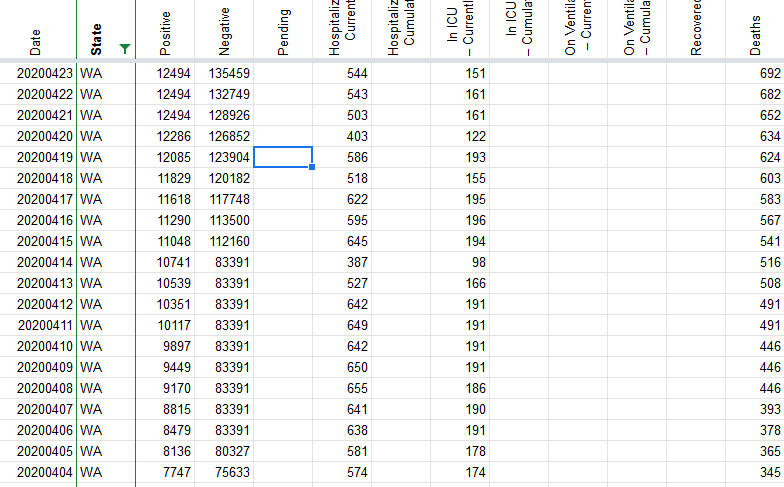

[States Daily CSV] Totals for WA data lower 2020-04-23 than 2020-04-22
Issue number 277
hrushka opened this issue on April 23, 2020 at 5:21 pm
Source: https://covidtracking.com/api/v1/states/daily.csv
Fileds: totalTestResults,positive,negative,deaths Date: 2020-04-23
Comments
hrushka commented on April 24, 2020 at 6:34 pm
@muamichali hey thanks for checking on this, I found the error in my import. I was relying on the Hash column to be a primary key for the state and day, so I was duplicating days in certain instances!
Hi @hrushka
Your website is great! I am seeing very different numbers on https://c19.dev/d/4S5AN4CZz/covid-19-us-state-data?panelId=2&fullscreen&orgId=1&from=now-45d&to=now&var-state=WA&var-population=7614893&var-density=147.46721965695642&var-total_cases=12539&var-total_deaths=696 than on our WA numbers. Positives and Testing numbers are off. Can you double check that you are using our numbers please?
